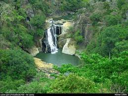

Dumhinda Ella
Read More
|
Dunhinda EllaDunhinda Falls is a waterfall located about 5 kilometres (3.1 mi) from Badulla in the lower central hills of Sri Lanka.The waterfall, which is 64 metres (210 ft) high, gets its name from the smoky dew drops spray, (Dun in sinhala means mist or smoke) which surrounds the area at the foot of the waterfall. The fall is created by the Badulu Oya which flows through Badulla. |
|
||


|
|||
|
|||